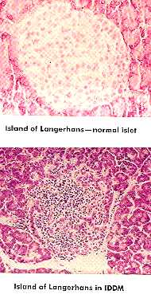

CYTOTOXIC REACTIONS IN ORGANOSPECIFIC AUTOALLERGY

Although detailed discussion of autoimmunity and autoallergy belongs to separate part of this book, we shall emphasize here that cytotoxic reactions play ultimate in pathogenesis of such organospecific diseases as insulin dependent diabetes mellitus (IDDM), sympathetic ophthalmitis, facogenic uveitis, Sheehan’s syndrome, pemphigus vulgaris.In IDDM certain exogenous antigens (Coxsakie B4 virus, rubella virus, mumps mixovirus, cow milk albumin etc.), sharing epitopes with self antigens (glutamate decarboxylase, carboxypeptidase H and surface insulin of pancreatic islet b - cell), provoke autoimmune cytotoxic insulitis in individuals carrying D3 and/or D4 MHC glycoproteins. In pemphigus there is autoallergy towards desmosomes.
Some forms of rapidly progressing diffuse glomerulonephritis in humans (idiopathic, Goodpasture syndrome, Schonlein-Henoch disease) and also rat experimental Heymann’s nephritis are caused by cytotoxic complement-dependent reactions (e.g. in Heymann’s - against the complex of megalin and receptor-associated 44 kD protein of transcytotic vesicles or brush limbus of tuft epithelium). Of great importance are autoimmune cytotoxic reactions against extracellular matrix antigens. In these cases organospecificity is relative. For instance, cytotoxic IgG establishes cellular and complement dependent reaction towards collagen-associated tuft basal membrane glycoprotein antigen in rapidly progressing crescentic glomerulonephritis type I in humans. The analogous process aimed at basal membrane can be induced experimentally (Masugi-Lindemann model of glomerulonephritis with injection of heterologous nephrotoxic serum). In Goodpasture syndrome cytotoxic reaction (towards non-collagenous domain in a - 3 chain of IV type collagen) involves the basal membranes in kidneys and bronchopulmonary apparatus. In all these cases the characteristic pathomorphologic details would be linear pattern of immunofluorescence in tufts and immune complex formation in situ, within involved kidneys. The hyperacute graft rejection (see below) also includes cytotoxic reaction against MHC antigens and AB0 antigens, expressed on transplant.
The diagnosis of cytotoxic reactions requires the determination of specific antibody titers. This is accomplished by means of complement-fixation test, or less sensitive Merskey’s test, immunoprecipitation or double immunodiffusion Ouchterlony’s test. Tissue location and specificity of cytotoxic autoantibodies can be characterized by immunomorphological analysis, including immunofluorescence Coons-Kaplan test. Immunoenzyme and radioimmunologic assays measure the level of antibodies in biological fluids.
NEXT CHAPTER
OR